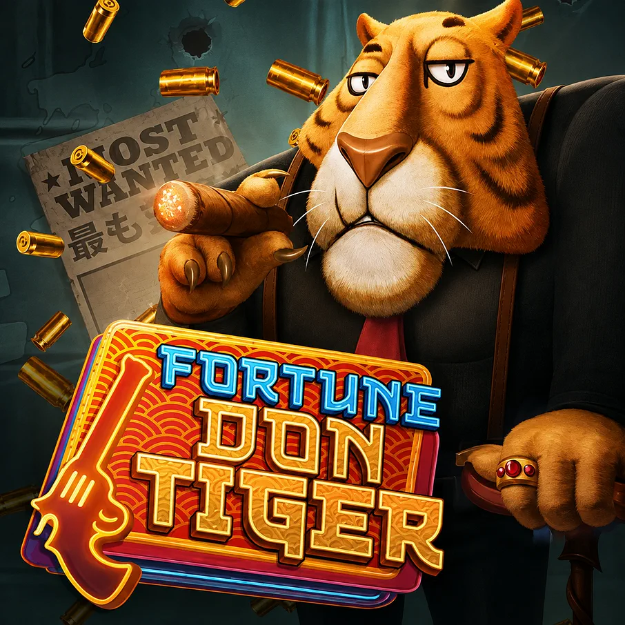

GAME ART / Slots
Fortune Don Tiger
A sharply dressed tiger, saturated colour, and polished props define the character and visual world.
A team-delivered Pascal Gaming project, presented as part of my game art and production portfolio.

GAME ART / Slots
A sharply dressed tiger, saturated colour, and polished props define the character and visual world.
A team-delivered Pascal Gaming project, presented as part of my game art and production portfolio.